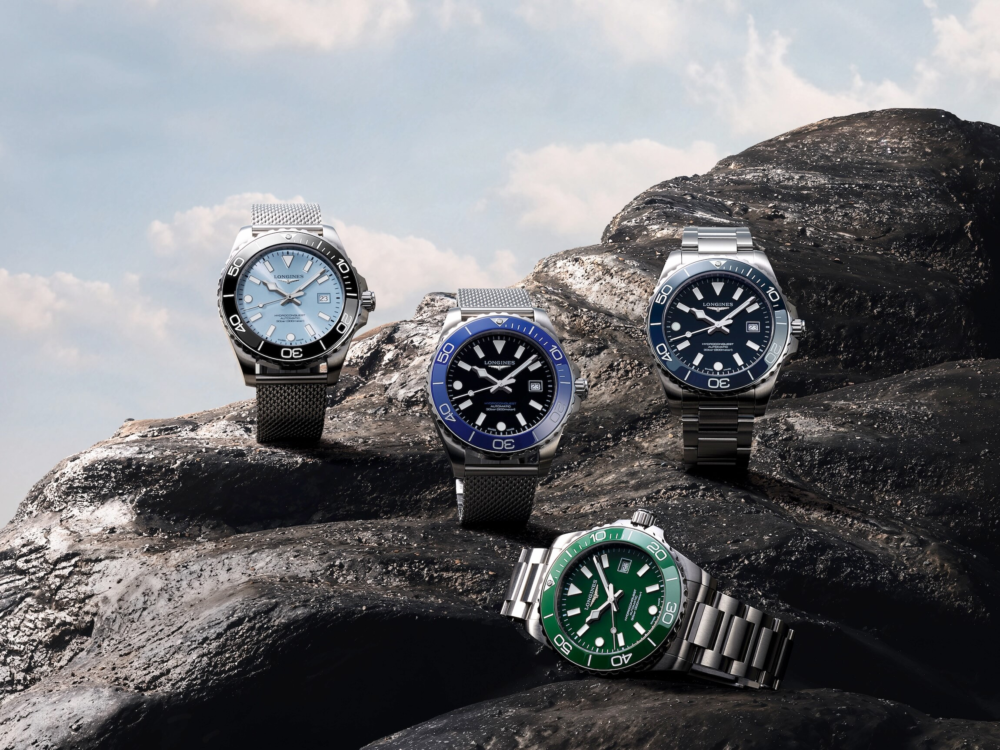
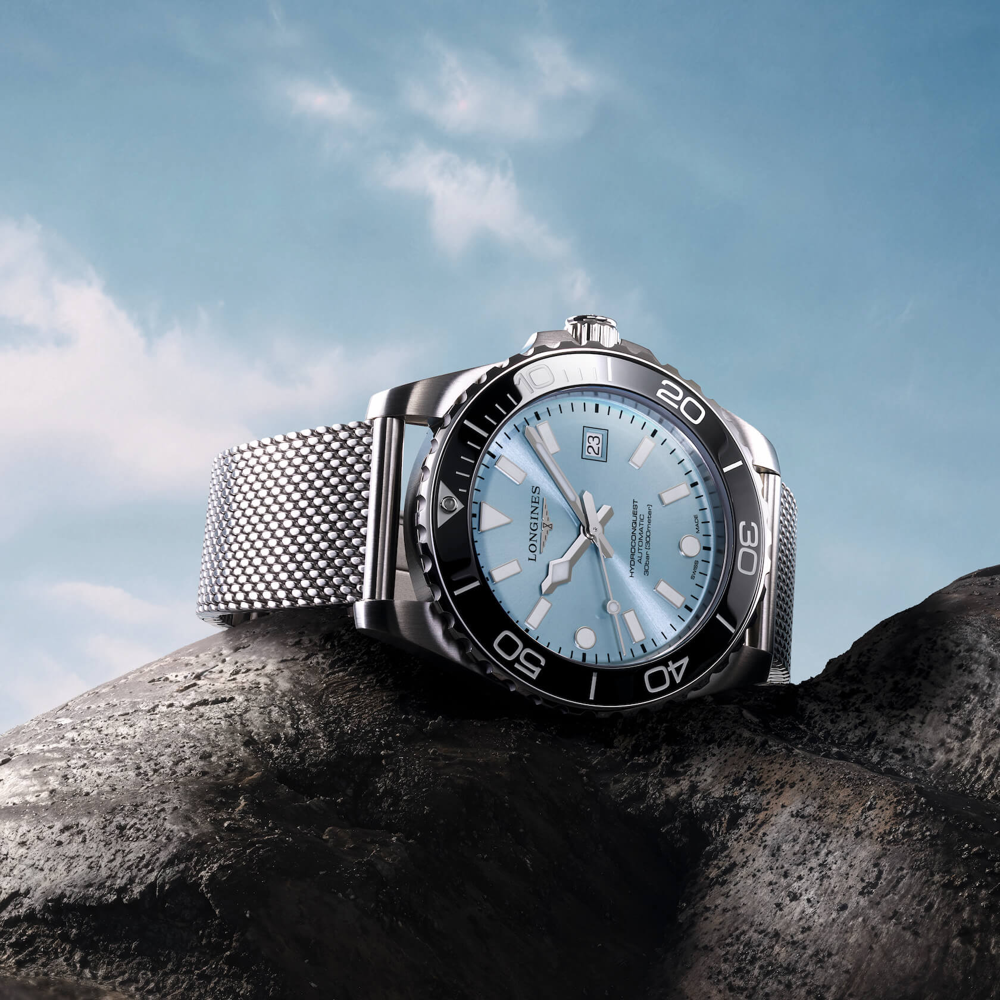
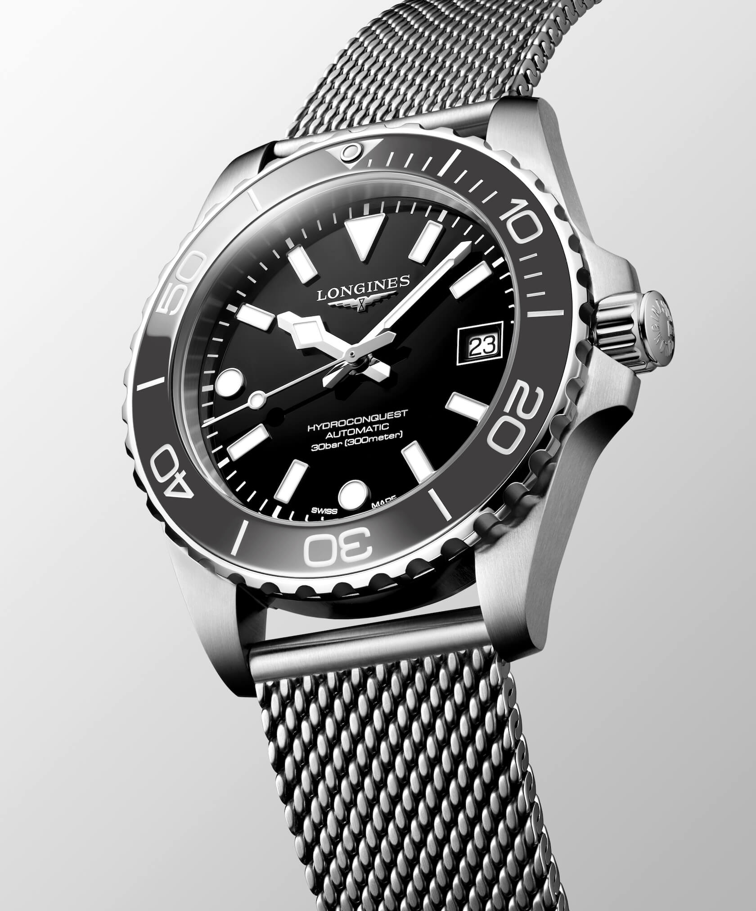
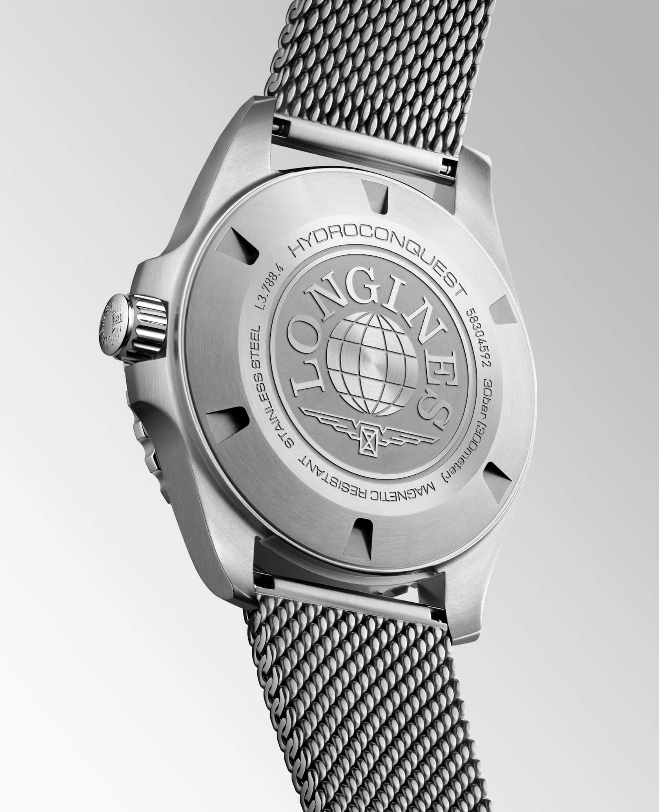
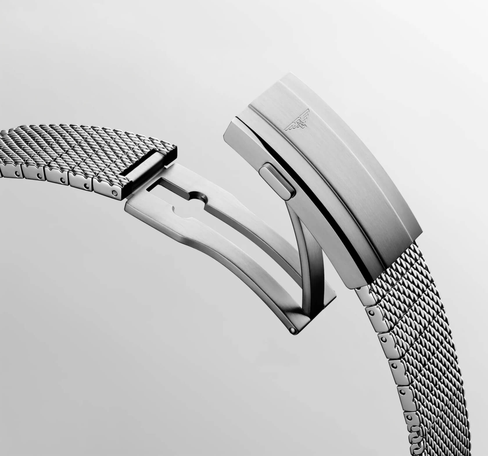

The New Milanese Bracelet for the 3rd Gen Longines HydroConquest
When Longines unveiled the third-generation HydroConquest most of the conversation centred on the slimmer case, the redesigned ceramic bezel, and the cleaner dial. Those are meaningful upgrades. But here at StrapHunter, there's one element of this release that has us especially excited: the new Milanese mesh bracelet. It's the first time Longines has offered the HydroConquest in this style, and it's been done very well.
 Nenad Pantelic • April 6, 2026
Nenad Pantelic • April 6, 2026

A Quick Recap of the Watch
The 2026 HydroConquest is a completely reimagined version of Longines' core 300m dive watch. There are two sizes available, one in 39mm and a bit larger version in 42mm. Both have a case thickness of 11.7mm (about 0.5mm slimmer than the outgoing model), with lug-to-lug measurements of 48.10mm and 51.20mm respectively. The bezel has been redesigned, and the dial replaces the old large numerals at 12, 6, and 9 with a cleaner mix of rectangular, triangular, and round applied markers.
Three of the six available references come on the Milanese bracelet: a black dial with slate grey ceramic bezel, a black dial with a saturated blue ceramic bezel, and a frosted blue dial with black ceramic bezel. The other three variants get the H-link steel bracelet carried over from the HydroConquest GMT.

What Makes This Milanese Different
Longines had every opportunity to do something generic here, and they chose not to.
What they've built is a hybrid construction. A traditional woven mesh through the main body of the bracelet, which then transitions to mesh-textured single links near the clasp.
That means you can remove full links for proper sizing instead of relying on the strap-style overlap you get with most third-party Milanese bands.
If you've ever worn a mesh bracelet that bunches under the clasp because there's leftover material after sizing, you know exactly why this matters.
Also, Longines didn't just use a typical pin-hole and deployant system for the clasp. Longines went with a double-folding safety clasp with a built-in micro-adjustment system (four positions) and a push-piece opening mechanism. It's completely their solution, engineered from scratch.
Construction & Finishing
The bracelet has a nice taper and, as mentioned before, features micro-adjustment on the clasp.
It has a brushed finish all around and a bit of polishing on the sides. Again, this is where we see that Longines invested a bit more into the bracelets, as many other brands struggle to combine multiple types of finishes.
The overall construction is robust and sturdy. A lot of Milanese bracelets can feel flimsy and soft. Almost textile-like. This one still feels solid. On a 300m diver with a ceramic bezel, that's exactly the right call.
Longines didn't want to mess up proportions of the larger watch, keep the lugs at 20mm, and just use the same bracelet as on the 39mm model. No, they actually developed a 21mm version.
Although I am generally not a fan of 21mm lug widths, I have to give Longines credit here. They refused to compromise and clearly invested the time and effort to make each watch perfect.


Link Removal & Sizing
This is where the HydroConquest Milanese option stands out from most competitors. The bracelet is sized using links that can be removed. Links use screws. As they should, as everyone should design their bracelets.
This system is great. You're not left with excess mesh bunching under the clasp, nor are you dependent on a fiddly pin and collar system. You get genuine, link-by-link precision sizing combined with clasp-based micro adjustment.

The Bottom Line
The HydroConquest Milanese is not an afterthought. What impresses me most isn't any single feature. It's the fact that Longines thought about this bracelet as a product in its own right. They engineered a hybrid link system, borrowed a proven clasp from their Spirit line, nailed the finishing, and priced it at just a modest step above the standard bracelet.
That's not what "we need a Milanese option" usually looks like from a Swatch Group brand.
The Milanese mesh models retail for $2,400 USD compared to $2,200 for the H-link variants. A $200 premium for this level of bracelet engineering is an excellent value.
Kudos to Longines!